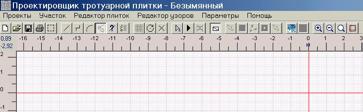

Проекты создаются в самом первом окне, которое появляется после запуска программы. Проект нужно либо создать (меню Проекты -> Новый ), либо открыть существующий (меню Проекты -> Открыть ). После этого разблокируются пункты меню и кнопки на панели инструментов. Вместо меню можно пользоваться панелью инструментов.

Схема работы такая:
1. Нарисовать участок.
2. Обозначить начальную точку.
3. Выбрать узор.
4. Заполнить участок плиткой. Если нужно, предварительно поэкспериментировать с укладкой одного узора.
5. Оформить участок цветом или текстурой.
6. Напечатать результаты.
7. Сохранить участок.
Эти шаги подробно описаны в следующих главах.